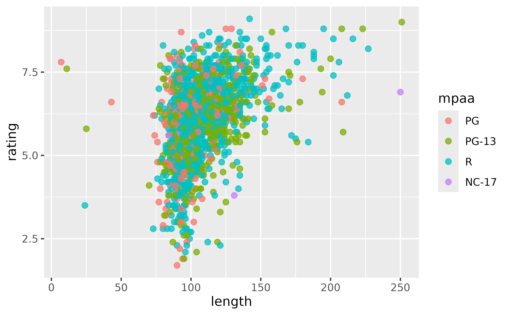

sap (Shiny App-Packages)
sap.RmdThe sap package is designed to demonstrate how to build
a Shiny application inside an R package.
Utility functions
The utility functions in sap make it easier to wrangle
data, write tests, render graphs, and display log messages/text
logos.
Tidy ggplot2movies data
The make_tidy_ggp2_movies() function was written to
wrangle the ggplot2movies data into a ‘tidy’ format.
ggp2mov_url <- "https://raw.githubusercontent.com/hadley/ggplot2movies/refs/heads/master/data-raw/movies.csv"
tidy_movies <- make_tidy_ggp2_movies(movies_data_url = ggp2mov_url)
str(tidy_movies)
#> 'data.frame': 58788 obs. of 10 variables:
#> $ title : chr "$" "$1000 a Touchdown" "$21 a Day Once a Month" "$40,000" ...
#> $ year : int 1971 1939 1941 1996 1975 2000 2002 2002 1987 1917 ...
#> $ length : int 121 71 7 70 71 91 93 25 97 61 ...
#> $ budget : int NA NA NA NA NA NA NA NA NA NA ...
#> $ rating : num 6.4 6 8.2 8.2 3.4 4.3 5.3 6.7 6.6 6 ...
#> $ votes : int 348 20 5 6 17 45 200 24 18 51 ...
#> $ mpaa : Factor w/ 5 levels "G","PG","PG-13",..: NA NA NA NA NA NA 4 NA NA NA ...
#> $ genre_count: int 2 1 2 1 0 1 2 2 1 0 ...
#> $ genres : chr "Comedy, Drama" "Comedy" "Animation, Short" "Comedy" ...
#> $ genre : Factor w/ 8 levels "Action","Animation",..: 6 3 6 3 NA 5 6 6 5 NA ...This function is not exported from the package, it lives in
tests/testthat/fixtures/make-tidy_ggp2_movies.R.
Test helpers
The make_var_inputs() and
make_ggp2_inputs() functions make it easier to create test
inputs for modules:
make_var_inputs()list(y = 'audience_score',
x = 'imdb_rating',
z = 'mpaa_rating',
alpha = 0.5,
size = 2,
plot_title = 'Enter plot title'
)
make_ggp2_inputs()list(x = 'rating',
y = 'length',
z = 'mpaa',
alpha = 0.75,
size = 3,
plot_title = 'Enter plot title'
)These live in tests/testthat/helper.R and are not
exported from the package.
Create scatter plot
The scatter_plot() function was written to make it
easier to use ggplot2 functions in the
mod_scatter_display_server() function.
Variable inputs are collected from the UI as strings (i.e.,
"length" and "rating", not length
and rating), which makes it difficult for standard
ggplot2 calls:
ggplot2::ggplot(data = na.omit(tidy_movies),
mapping = ggplot2::aes(
x = length,
y = rating,
color = mpaa)) +
ggplot2::geom_point(
alpha = 0.75,
size = 2)
scatter_plot() allows for strings to be passed to the
rendering functions:
scatter_plot(
df = na.omit(tidy_movies),
x_var = "length",
y_var = "rating",
col_var = "mpaa",
alpha_var = 0.75,
size_var = 2
)
Logs and logos
log_message() uses base R functions and is simple but
effective.
log_message(
message = "A log message",
save = FALSE)
#> [2026-06-19 19:09:27] A log messagelogr_msg() is written with the logger
package and has additional arguments:
logr_msg(
message = "A log message",
level = "INFO",
store_log = FALSE)
#> INFO [2025-03-05 13:57:53] A log messageApplications
ggp2 (tidy ggplot2movies)
../inst/tidy-movies
├── R
│ ├── devServer.R
│ ├── devUI.R
│ ├── dev_mod_scatter.R
│ └── dev_mod_vars.R
├── app.R
├── imdb.png
└── tidy_movies.fst
launch_app(app = 'ggp2')quarto
launch_app(app = 'quarto')